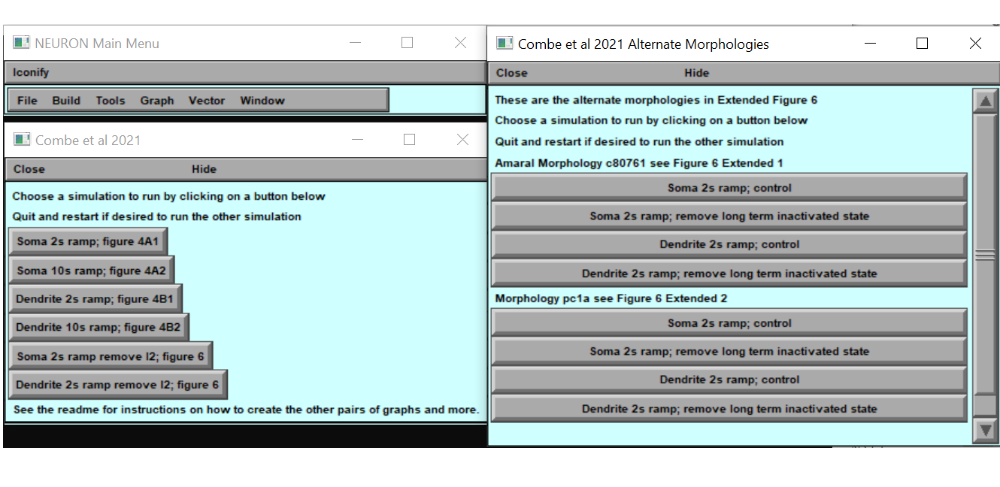

This is the NEURON code associated with the paper:
Upchurch CM, Combe CL, C Knowlton, V Rousseau, Gasparini S, Canavier CC, (2021) Long-Term Inactivation of Sodium Channels as a Mechanism of Adaptation in CA1 Pyramidal Cells.
This model entry was contributed by C Canavier. The freely available NEURON
simulation enivronment (from http://www.neuron.yale.edu) is required for this model.
To use:
-------
Autolaunch from modeldb if the browser is capable or compile the mod
files and start with mosinit.hoc (easiest) (If you need more help to run the model,
please refer to:
https://senselab.med.yale.edu/ModelDB/NEURON_DwnldGuide.cshtml)
On linux for example typing
nrngui init.hoc
Will generate 2 panels asking what simulation wou want to run, the first panel will produce simulations from figure 4 and figure 6 of the paper, the second panel will produce simulations from the extended figure 6:

running one of these simulations will produce a shape plot, a plot of the applied current, a voltage plot, and if applicable a states plot
 Additional running notes:
Additional running notes:
-------------------------
Interspike intervals and frequencies were analyzed offline, as well as Figure 5. sum_currents_of_interest.hoc sums current through Nav1.6 through all parts of the neuron and records it in a text file. sum_capacitive_current.hoc sums capacitive current throughout the neuron and records it in a text file. square_pulse.hoc is a square pulse used to evaluate the input resistance.